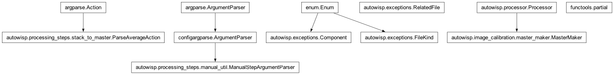
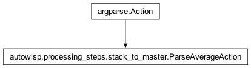

autowisp.processing_steps.stack_to_master module
Class Inheritance Diagram

Stack a collection of images to a master frame.
- class autowisp.processing_steps.stack_to_master.ParseAverageAction(option_strings, dest, nargs=None, const=None, default=None, type=None, choices=None, required=False, help=None, metavar=None)[source]
Bases:
Action
Parse the specification of the averaging function on the command line.
- autowisp.processing_steps.stack_to_master.allowed_interrupted_status_values = (0,)
Frames are marked as started and nothing else until the master is written, so that is the only state an interrupted stack leaves behind.
- autowisp.processing_steps.stack_to_master.cleanup_interrupted(interrupted, configuration)[source]
Cleanup file system after partially creating stacked image(s).
- autowisp.processing_steps.stack_to_master.get_command_line_parser(*args, default_threshold=(5.0,), single_master=True, default_min_valid_values=5, default_max_iter=20)[source]
Return a command line parser with all arguments added.
- autowisp.processing_steps.stack_to_master.get_master_fname(image_fname, configuration, fname_key='stacked_master_fname')[source]
Return the name of the master the given image should contribute to.
- autowisp.processing_steps.stack_to_master.parse_command_line(*args)[source]
Return the parsed command line arguments.
- autowisp.processing_steps.stack_to_master.stack_to_master(image_collection, start_status, configuration, mark_start, mark_end)[source]
Stack the given frames to produce a single master frame.
The frames going into a stack plus the master(s) coming out.
Unlike the steps that map over their input one file at a time, stacking is the collection: a failure (too few valid frames, mismatched geometry) is about the set, not about one frame, so every input is attached. The set is bounded by what a single master stacks, unlike the per-source lightcurves
create_lightcurveswrites.- Parameters:
image_collection – The calibrated frames being stacked.
master_fnames (Sequence[str]) – The master(s) this stack produces, attached as
expected_output– they may not exist yet (or may be half-written) when the failure surfaces.
- Returns:
The
RelatedFileentries for the stack.- Return type: